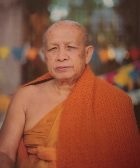

One Way Path Group is part of a network of meditation centres and temples run by students of the late Venerable Ajahn Tong Sirimangalo (Ajahn Tong). We operate under the spritual direction of Ajahn Tong, Venerable Ajahn Dhammo Tach Troung of the Khmer Krom Buddhist Temple in Stoney Creek, Ontario and Ajahn Tong's senior diciples, Thanat Chindaporn and Kathryn Johnston Chindaporn.
The signifacnce of Ajahn Tong's teachings is currenly under reported in popular media but his contribution, and that Thanat and Kathryn Chindaporn, to the field of Buddhist meditation are among the word's most significant of recent times.
Over the centuries after the death of the Buddha, some of his most imporant teachings on meditation fell into obscurity within Buddhist communities. At the same time, the concept of mindfulness as a spritual practice began to diverge from those same specific teachings of the Buddha. The divergence is likely to have occured because of the inaccessability of teachings in their original language, Pali, and the limited size of the monastic communities in which the practice had been kept up as an oral tradition.
However, at the turn of the 20th century, a Burmese monastic teacher known as the Mahasi Sayadaw began reviving these lost teachings. The teachings consisted of mental noting as central to the Buddha's defintion of mindfulness. Although the instruction for mental noting -- as an imperative of mindfulness rather than an optional component -- is prolific throughout the written text of the Buddha's words, the Pali term which represents it "Satima" had not been correctly translated. Furthermore, markers of a successful insight meditation practice known as the Stages of Insight Knowledge had been relegeted to the status of mere commentary on the text when in fact the Buddha had given the the Stages of Insight Knowledge pride of place winthin the first few words he spoke after attaining enlightenment. Again, recognition of the importantance of the Stages of Insight Knowledge fell into abyeance because the Pali language had not been properly translated into the western the vernacular.
The Mahasi Sayada's invaluable work in reviving the Buddha's Insight Meditation Teachings was successful in reigniting the practice in Myannmar (Burma) and his teaching spread to other Buddhist countries including Thailand. However, the practice still remainded somewhat inaccessible to westerners because of the long time periods that were required to engage with the practice and its location in Myannmar which is less popular as a tourist destination. Furtunately, during the lifetime of the Mahasi Sayadaw, Ajahn Tong gained knowledge of the practice and became proficient in it to the extent that only a few weeks of practice is now required in order to see dramatic results. Moreover, because of his clear elucidation of the Stages of Insight Knowledge, lay meditation teachers could be trained to recognize correct pratice in students over a few years (rather than decades).
During the years of his life, Ajahn Tong succeeded in building up a large meditation centre at the Chomtong Temple and Monestary, approximately one hour south of Chiang Mai, Thailand. Senior lay deciples of Ajahn Tong, Thanat Chindaporn and Kathryn Johnston Chindaporn also became proficient in the practice and built up a network of meditation centres throughout the world to ensure that the practice remains accessible for all human kind in the years to come. One Way Path Group was started by Sandra, Alex and Miriam Young in 2018 to contribute to this work initially at the Buddhavipassana Meditation Centre in Toronto and On-Nūm Meditation Centre in Lieberose, Germany (approximately 120 km south east of Berlin). As part of the work of developing meditiation facilities, One Way Path Group builds homes for Buddhist communities, led by plans to build the first of such communities in Stoney Creek, Ontario in the area surrounding the Khmer Krom Buddhist Temple under the spiritual guidance of its Abbot, Venerable Dhammo Tach Truong.